Recently I wrote a blog post Cypress Module Problem where I tested a sample Svelte Kit application bahmutov/my-svelte-app. The simple test I wrote just confirmed the home page Counter application works.
1 | it('counts', () => { |
The tests works locally just fine.
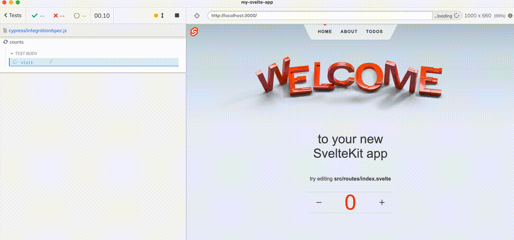
Continuous Integration
One of the first things I recommend anyone do when writing end-to-end tests is to run the tests on continuous integration service. So I set up a GitHub Actions workflow using my own bahmutov/cypress-workflows reusable workflow called "standard".
1 | name: ci |
The workflow installs the dependencies, caches them, starts the application using the command npm run dev and runs Cypress when the application responds on port 3000. All was good until I pushed the code. The workflow failed.
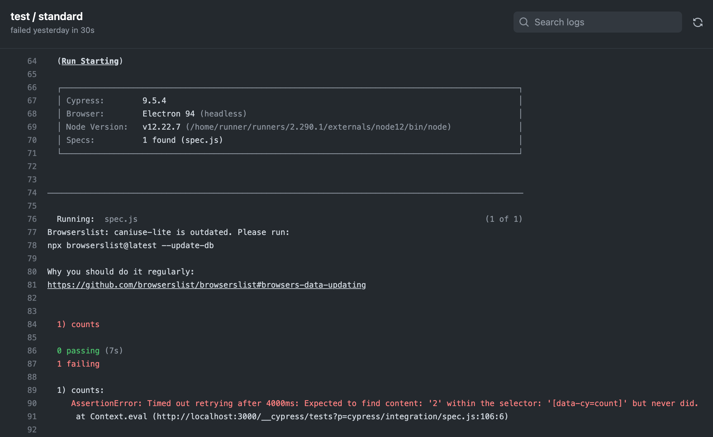
Hmm, what has happened? Seems the element [data-cy=count] was present, but had a number different from 2. Was it 0? Was it 1? Was it something else? I need to see the browser at the moment of failure.
Cypress Dashboard
I have decided to set up recording the test results on Cypress Dashboard. In the Cypress running locally I switched to the "Runs" tab.
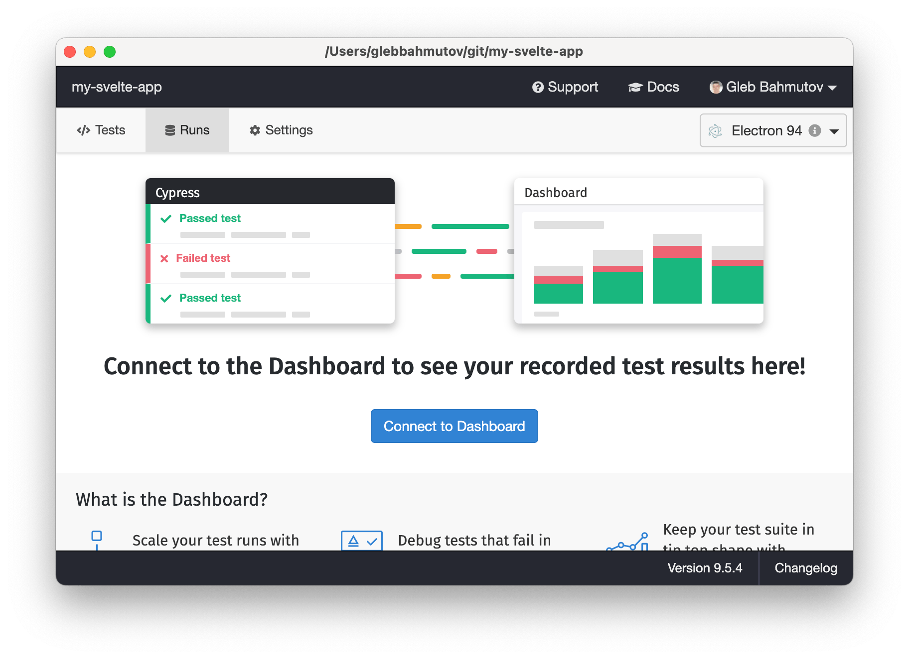
I clicked the "Connect to Dashboard" button. On the next screen I have picked my Open Source organization plan and set the project visibility to "Public".
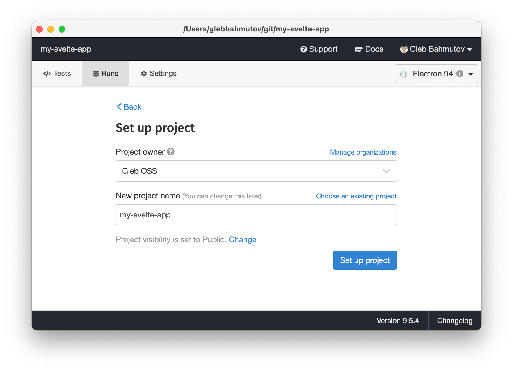
The next screen shows the Record key created by the Cypress Dashboard for this project. Keep this key private.
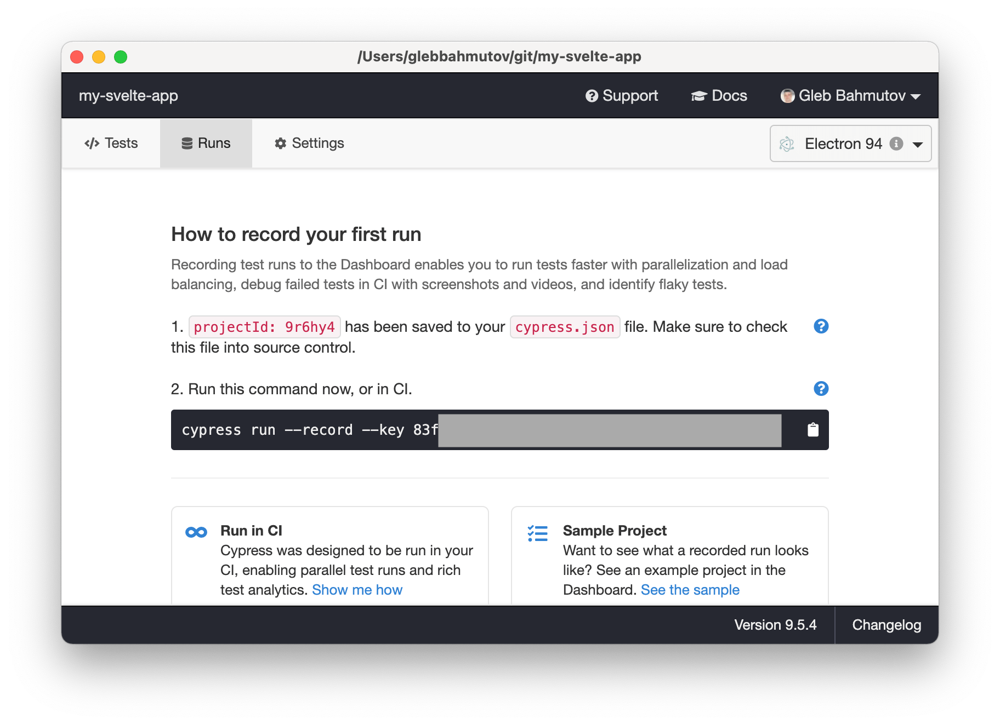
Great, now let's record the CI results to the Dashboard.
Recording
To record the test results and error screenshots on the Cypress Dashboard, I could have set the shown Cypress record key as an environment variable CYPRESS_RECORD_KEY. Since I am using GitHub Actions, I need to set the key as a secret.
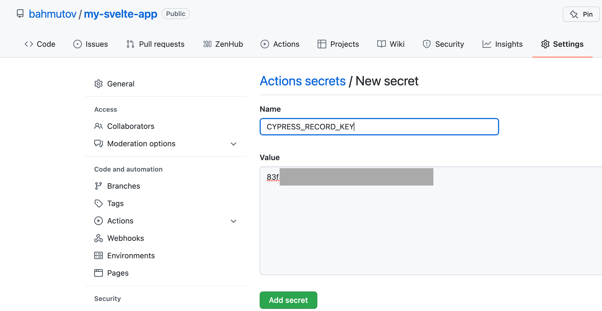
We need to pass our secret value to the reusable GitHub workflow, and tell the workflow to record. Here is the updated ci.yml file
1 | name: ci |
The CI runs and shows the Dashboard run URL for us to open.
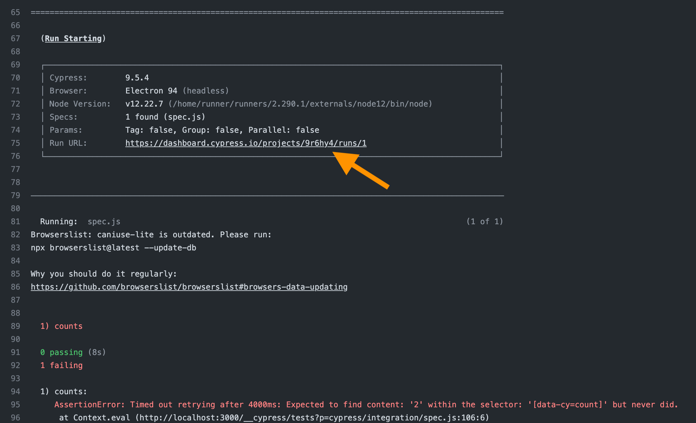
Let's open the shown URL. Each test result has its own wealth of information, including the stack, the code frame, and the screenshot.
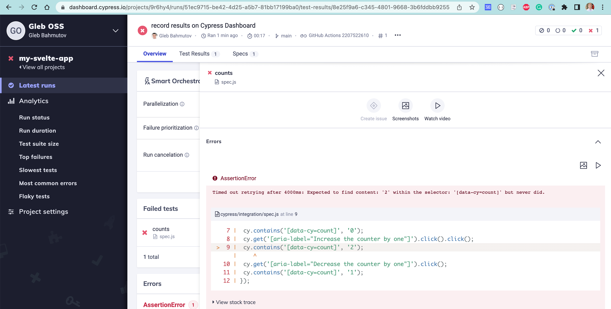
The Dashboard has the screenshot of the failure. Hmm, the button did work once, we can see the count was 0 and then became 1. Why isn't it 2?
Debugging the failure
Ok, maybe the test clicked the button twice too quickly. Maybe we need to wait for the counter to show 1 before clicking the second time? I have modified the test to add an assertion between the two clicks.
1 | it('counts', () => { |
I push the code and watch. The CI fails again, the Cypress Dashboard shows the new error screenshot.
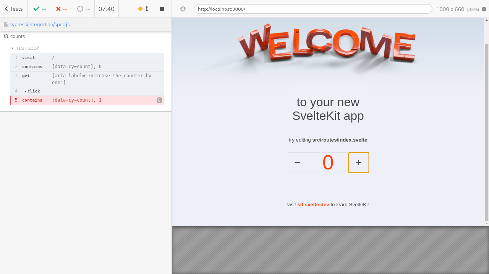
Ok, seems the very first click on the button does not register. The second click did work (in the previous version of the test). Is this a problem caused by the event listeners yet to be attached to the button, as I described in the blog post When Can The Test Click?
To check, I first added a wait of one second before clicking the button for the very first time. This should give some time to the JavaScript framework to register the event listeners and be ready to process the user events.
1 | it('counts', () => { |
Nice, the test worked on CI.
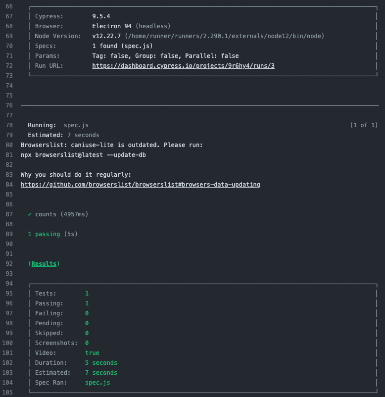
Of course, to be really sure, I would need to run the test repeatedly as described in my blog post Burning Tests with cypress-grep or my other blog post Retry, Rerun, Repeat.
Ok, so waiting a little bit seems to solve the "missing click" problem. How does the application handle the click? Let's inspect the button in the browser.
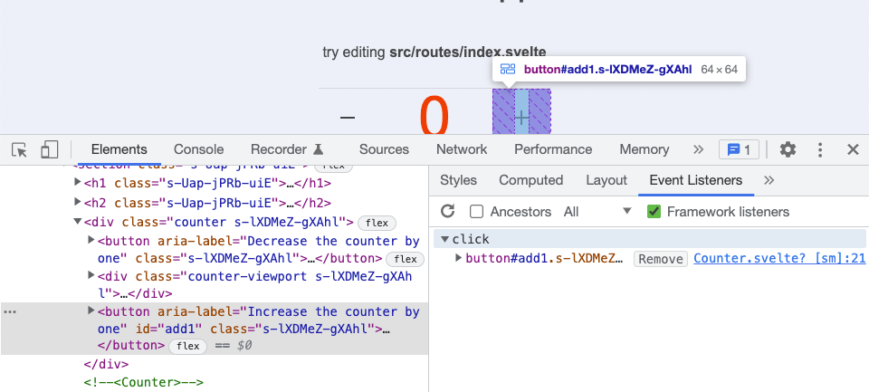
Super. So the page shows the button very quickly, before the Counter component is listening. Cypress Test Runner sees the button and clicks it right away: the button is there, it is not disabled, so good to go ... but not really. A very quick user could also click the button before the application is ready to react to the clicks.
The solution
There are no observable attributes on the page I could find that would let me know when the application has finished attaching its event listeners. Thus I need to ask the button itself "do you have click event listener?" as described in When Can The Test Click blog post. I installed the cypress-cdp plugin and added a command to the test file cypress/integration/spec.js.
1 | import 'cypress-cdp'; |
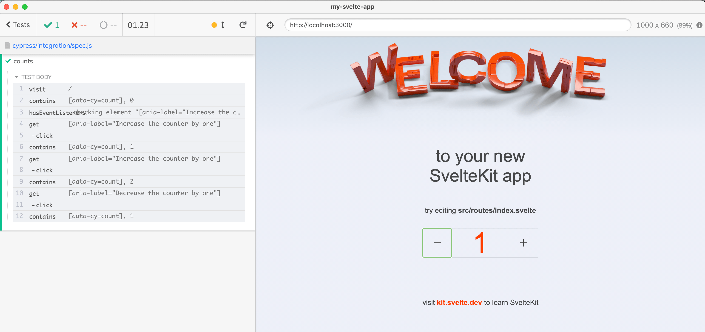
Beautiful.
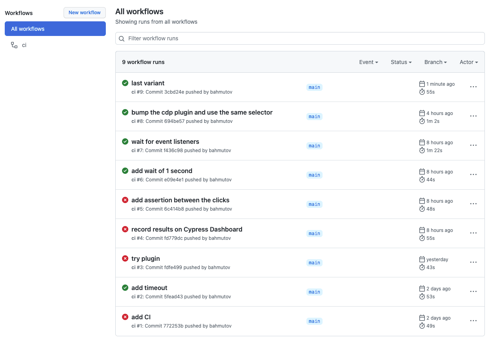
Our test now seems to work reliable on CI, see for yourself at bahmutov/my-svelte-app/actions.